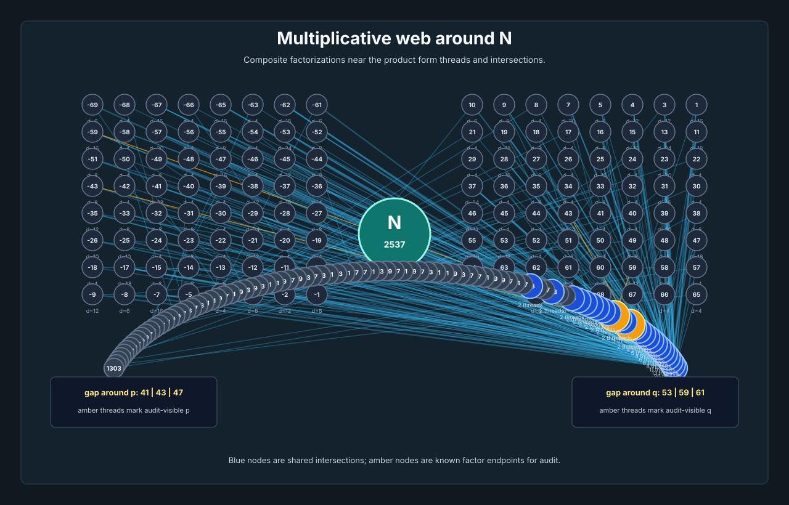
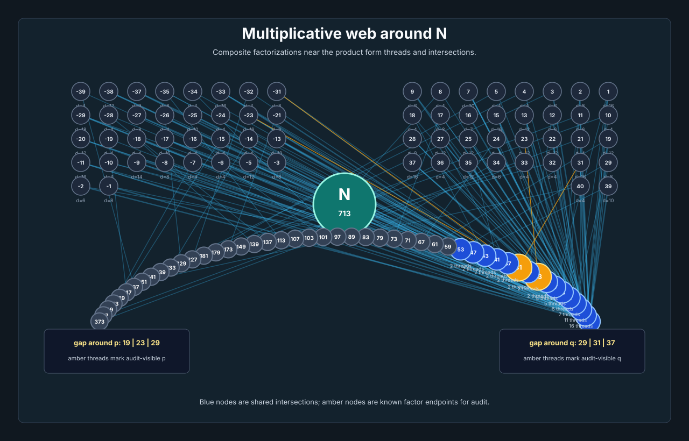

Multiplicative Web Probe
Exact factor threads around semiprimes. This is a visualization and audit surface, not a live factor inference rule.
Fixed-Window Scale Run
The reciprocal-shadow score keeps the observation radius fixed at 300. Only N = p * q changes. One factor is enough for success; because p < q in these cases, the lower hidden factor p is the one-factor target. It ranks first in all sixteen measured cases.
| N | p | q | radius | direct rows removed | candidates | p rank | p coherence | control p rank | control coherence |
|---|---|---|---|---|---|---|---|---|---|
| 713 | 23 | 31 | 300 | 44 | 9 | 1 | 1.000000 | 9 | 0.090989 |
| 2537 | 43 | 59 | 300 | 22 | 15 | 1 | 1.000000 | 15 | 0.068164 |
| 5063 | 61 | 83 | 300 | 14 | 20 | 1 | 1.000000 | 19 | 0.053740 |
| 10057 | 89 | 113 | 300 | 10 | 25 | 1 | 1.000000 | 25 | 0.049755 |
| 13837 | 101 | 137 | 300 | 8 | 30 | 1 | 1.000000 | 30 | 0.044490 |
| 21877 | 131 | 167 | 300 | 6 | 34 | 1 | 1.000000 | 34 | 0.045884 |
| 36503 | 173 | 211 | 300 | 4 | 43 | 1 | 1.000000 | 42 | 0.040079 |
| 63433 | 229 | 277 | 300 | 4 | 54 | 1 | 1.000000 | 54 | 0.039279 |
| 112669 | 307 | 367 | 300 | 0 | 67 | 1 | 1.000000 | 67 | 0.026560 |
| 201703 | 401 | 503 | 300 | 0 | 87 | 1 | 1.000000 | 86 | 0.036420 |
| 368177 | 557 | 661 | 300 | 0 | 110 | 1 | 1.000000 | 110 | 0.026379 |
| 621787 | 701 | 887 | 300 | 0 | 138 | 1 | 1.000000 | 137 | 0.024779 |
| 1242079 | 1009 | 1231 | 300 | 0 | 186 | 1 | 1.000000 | 185 | 0.025567 |
| 3206803 | 1601 | 2003 | 300 | 0 | 278 | 1 | 1.000000 | 277 | 0.028441 |
| 12007001 | 3001 | 4001 | 300 | 0 | 485 | 1 | 1.000000 | 484 | 0.018033 |
| 35026003 | 5003 | 7001 | 300 | 0 | 777 | 1 | 1.000000 | 772 | 0.016658 |
48-Bit Ladder Boundary
This ladder is retained as a boundary measurement, not factor-selection evidence. It keeps the same score and radius, constructs each lower factor at 97 / 100 of the target square-root scale, and stops a numeric candidate walk on the first audit hit. That does not prove the reciprocal-shadow field selected the factor.
| bits | N | p | q | hit factor | scored until hit | candidates below sqrt | coherence | direct rows removed |
|---|---|---|---|---|---|---|---|---|
| 16 | 33043 | 173 | 191 | 173 | 3 | 42 | 1.000000 | 4 |
| 20 | 526451 | 701 | 751 | 701 | 3 | 128 | 1.000000 | 0 |
| 24 | 8406197 | 2803 | 2999 | 2803 | 11 | 419 | 1.000000 | 0 |
| 28 | 134230823 | 11213 | 11971 | 11213 | 37 | 1393 | 1.000000 | 0 |
| 32 | 2147679749 | 44939 | 47791 | 44939 | 124 | 4792 | 1.000000 | 0 |
| 36 | 34359791299 | 179801 | 191099 | 179801 | 458 | 16777 | 1.000000 | 0 |
| 40 | 549758053997 | 719203 | 764399 | 719203 | 1658 | 59631 | 1.000000 | 0 |
| 44 | 8796138413641 | 2876833 | 3057577 | 2876833 | 5949 | 214516 | 1.000000 | 0 |
| 48 | 140737552370539 | 11507371 | 12230209 | 11507371 | 21900 | 779638 | 1.000000 | 0 |
Invalidated 64-Bit Attempt
The prior 52 through 64-bit new-rung run is invalid as inference evidence. Its candidate stream was bounded by the hidden audit factor p, so the run did not test whether the local web finds a factor from public structure. It is excluded from the measured success claim.
Blind Restart Through 52 Bits
The replacement run starts every candidate stream at public floor(sqrt(N)), scans downward in fixed public segments, scores every prime candidate before audit, and uses p or q only to stop after a scored audit hit. It fixes hidden-factor bounds, but it is still a numeric candidate walk rather than factor selection by the local web.
| bits | N | hit factor | hit candidate | scored until hit | segments | coherence | rows | threads | direct audit rows |
|---|---|---|---|---|---|---|---|---|---|
| 20 | 526451 | 701 | 701 | 3 | 1 | 1.000000 | 548 | 1673 | 0 |
| 24 | 8406197 | 2803 | 2803 | 11 | 1 | 1.000000 | 572 | 1813 | 0 |
| 28 | 134230823 | 11213 | 11213 | 37 | 1 | 1.000000 | 561 | 1897 | 0 |
| 32 | 2147679749 | 44939 | 44939 | 124 | 1 | 1.000000 | 565 | 1969 | 0 |
| 36 | 34359791299 | 179801 | 179801 | 458 | 1 | 1.000000 | 569 | 2027 | 0 |
| 40 | 549758053997 | 719203 | 719203 | 1658 | 1 | 1.000000 | 571 | 2109 | 0 |
| 44 | 8796138413641 | 2876833 | 2876833 | 5949 | 1 | 1.000000 | 580 | 2173 | 0 |
| 48 | 140737552370539 | 11507371 | 11507371 | 21900 | 1 | 1.000000 | 578 | 2245 | 0 |
| 52 | 2251800397873129 | 46029491 | 46029491 | 80539 | 2 | 1.000000 | 580 | 2299 | 0 |
N = 43 * 59 = 2537
Radius 70. The graph plots composites near N, their prime-factor threads, shared intersections, and audit-visible threads reaching 43 and 59.

N = 23 * 31 = 713
Radius 40. A smaller toy web showing the same thread/intersection idea with fewer composites.
